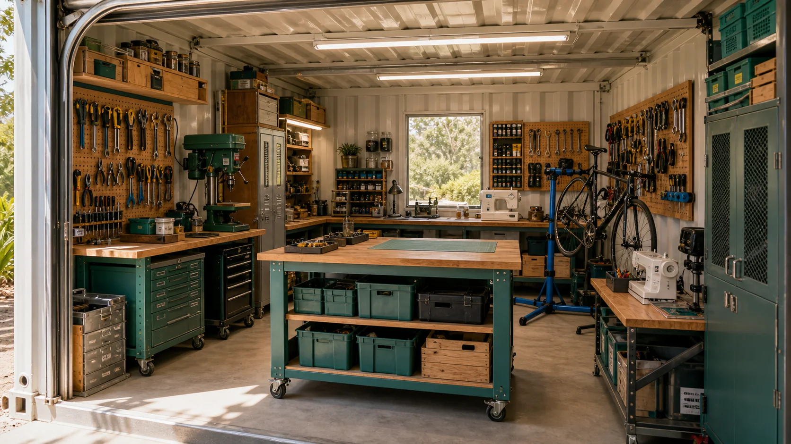

Tool wall
Hand tools visible, labelled and returned to outlines so missing items are obvious.
The tool shed can start old-school and simple, then grow into serious island fabrication: hand tools, repair benches, 3D printers, lasers, CNC, electronics, clean-energy prototypes, mineral-sand learning and custom systems designed on Straddie for Straddie.

The collected video playlist can become a public research prompt: what does a small, organised, high-capability workshop look like when every shelf, wheel, hook, label and bench has a job?
What would a visitor notice in the first 30 seconds if the room felt like a practical launchpad, not just someone else's confusing shed?
The point of the layout is to reduce friction. A non-technical person should know where to stand, what to touch, what needs induction, and where the big tools live.
Hand tools visible, labelled and returned to outlines so missing items are obvious.
A movable bench with power, light, clamps, basic fasteners and repair trays.
3D printer bank, laser cutter, CNC router or mill, CAD/CAM workstation, extraction, power and supervised workflows.
Sorted screws, fittings, cables, wheels, hinges, brackets and reusable components.
Reclaimed timber, sheet offcuts, tubes, rods, safe plastics, sand samples, glass tests and future material stock stored by type.
Laptops, cameras, CAD notes, noticeboard cards, QR labels, training media, experiment logs and grant-ready evidence.
The list can be old-school and simple at the front, then unapologetically ambitious as the room proves itself.
Measuring, marking, screwdrivers, pliers, spanners, socket sets, clamps, files, hand saws, hot glue, cable tools and basic PPE.
Multimeter, soldering station, small driver bits, bike tools, pump parts, sewing repair kit, adhesive tests and cleaning supplies.
Drill press, jigsaw, scroll saw, sanders, rotary tools, 3D printers as space and funding allow, laser cutter, CNC router, desktop mill, robotics, moulds, jigs and custom design workflows.
Sieves, scales, moulds, hand lenses, sample jars, kiln partnerships, glass tests, geopolymer trials, mineral-sand education and clean-energy material research.
Personal or group tools can be shared by request with named stewards, check-out rules, induction notes, consumables and maintenance records.
The wish list can name what should be borrowed, hired, donated, sponsored or grant-funded before the room buys new gear.
A shared tool library works when trust is designed in. The Markdown forms can capture who owns, lends, mentors, maintains and signs off the use of serious gear, including tools that should never be publicly listed with storage details.
Which tools would people share when the agreement is clear, fair, visible and backed by people who know what they are doing?
The form builder can create tool-share.md, learning-request.md, build-request.md, repair-request.md and experiment-idea.md drafts.
Ventilation, PPE, extraction, lockable storage, inductions, maintenance logs and stop-work rules are not brakes. They are how a room earns lasers, CNC, 3D printer banks, clean-energy rigs and serious public trust.
Right-to-repair is only the start. The same culture can grow toward Sandworm-scale design: custom parts, clean-energy prototypes, material tests, mineral-sand literacy, and systems engineered on the island for the island. Big work needs better rails, not smaller dreams.